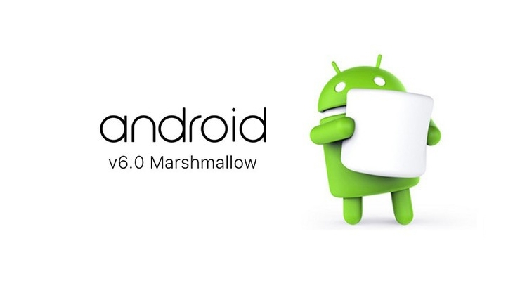

IT初学者

做android开发一两年后，很多人就会有这样一个疑问“我到底该如何再提高自身的技术水平呢？”下面来看看android开发的导师级人物"stormzhang"是如何看待这个问题的。
（本文转载自：stormzhang的知乎文章https://zhuanlan.zhihu.com/p/20691055?refer=stormzhang ）
本着每周至少有干货产出的原则，今天必须写篇干货来回馈大家，我这的干货可是不收费的哦，争取以后的目标是让你们看完我的文章不赞赏都觉得亏得慌！
之前不少人都问我同一个问题，就是我学习Android有一两年了，但是遇到瓶颈了，感觉没什么进步，到底怎么才能进阶呢？
我相信有不少人遇到这样的困扰，那么今天我就以一个过来人的身份给大家系统的解答各个阶段遇到的问题。

初学者
一般来说初学者需要一本书，结合视频，把书本看完基本上就算初学者了，需要提醒的是一定要记得把书中的demo全部敲一遍并亲自运行，很多时候看不如敲，敲远比不上亲自运行。这个时间每个人学习能力不一样，专职学习的话1-3个月差不多了。
初级工程师
一般工作一年以下的都算初级工程师，这个时候基础知识基本都能掌握，比如四大组件的使用，常用的布局与控件的使用，一些简单的动画与自定义View等，这个阶段相对来说算进步挺快的，这个时候只需要找家相对靠谱点的公司，主动做事，多承担任务，不要怕吃苦，多加加班，虽然说到加班大家都反感，但是现实就是这个时候你不加班多做点事，难不成等着以后觉得技能不够用了再加班么？这个阶段完全不用考虑生活与工作的平衡，因为这个时候你根本谈不上生活。这个阶段多努努力，很容易快速成长为中级工程师。
中级工程师
这个阶段因人而异，大概工作经验1-2年之间。但是往往这个阶段才是遇到瓶颈的时期，这个时期也许你承担app中单独的某块功能完全没问题，对一些常用的开源库也都能耳熟能详，项目中也会采用一些比较流行的开源库等，对常见的一些动画、自定义View与布局也能很快实现，可能也会注意一些常见的代码技巧，但是这个时候再也不是加加班就能对你的技术有很大提高的阶段了，这个阶段需要方法、实践与执行力，那么就这个阶段如何进阶我总结了以下方法：
1. 坚持写博客
中级工程师不只是一味的去做事、学习，其实更多的需要对知识的总结与归纳，而写博客是最好的手段，坚持写博客其实就是对你知识体系的回顾与总结，很多时候你对某块领域自认为掌握了，但是能写出来，并且能让别人看懂，那才是真正的熟练掌握呢，不说别的，就说一些IT界业内的大牛一般都有自己的博客，那些博客文章才是你知识沉淀的最好见证。至于更多写博客的好处见这篇文章「我为什么坚持写博客？」
2. 在GitHub上参与开源项目
我曾无数次提醒大家GitHub堪称程序员必备，聚集了全球各个领域的程序员，在上面你可以直接阅读Google、Facebook顶级公司的开源项目，可以一睹顶尖工程师的风采，在这里你绝对打开了另一扇世界大门，你可以阅读大牛源码，并试着贡献自己的代码，走出第一步，多参与，多交流，那句话怎么说来着：「与优秀的人接触，自己才会变得优秀。」同样的道理，阅读大牛们的代码多了，自己不知不觉中就会成长进步。GitHub并不仅是一个名片，更是进阶必备神器！
3. 有自己的完整作品
也许我们在公司参与不少功能的开发，不管是公司原因还是产品原因，或多或少我们为了赶进度也好，为了盈利也好，总有一些我们觉得不满意的地方，比如设计风格上不够Material Design，产品经理的一些天马行空的垃圾想法，甚至一些KPI导向的功能实现等，我相信这个阶段每个人心中都有这个想法，都觉得自己家的app不够酷，不叫Android，所以这个时候就付出行动吧，利用业余时间开发一款属于自己的完整作品，你可以尝试最新的技术与框架，用你认为最棒的工具，适配你认为的Material Design风格，这个过程不仅亲自实践了你之前想尝鲜的新技能，还完整经历了一个产品的构思与迭代过程，甚至最后把它开源，这个过程是非常宝贵的。
4. 看一些进阶的书籍
看书是每个阶段进步必备的过程，但是这个阶段你需要看的是一些进阶类的书籍了，不管是关于Java还是关于Android，你需要看一下以下书籍：
「Thinking In Java」
也许之前你看过，但是我相信对于一些高深的知识你肯定没理解，这个时候再回头看一下这本书，估计又是一番收获。
「Effective Java」
这本书堪称Java进阶必备，里面教你一些你不知道的Java技巧，以及一些常用的设计模式与原则，真正教你如何优雅的写Java。
「Android开发艺术探索」
这本书是面向Android中高级工程师，里面讲到的一些知识点与技能很不错，Android进阶必备。
5. 阅读Android源码，理解一些高级概念
Java语言进阶了，同样关于Android你也需要进阶，并不能停留在一些基本api的使用上，应该往更深层次的方向去研究，比如activity、view的内部运行机制，比如Android内存优化，比如aidl，比如JNI等，并不仅仅停留在会用，而要通过阅读源码，理解其实现原理。
最后送大家一句话，人生每个阶段都有每个阶段该干的事，你当下能做的就是踏踏实实做好现在的事，最好你能比你身边的人更努力些，不用太着急，你想要的，岁月都会给你！